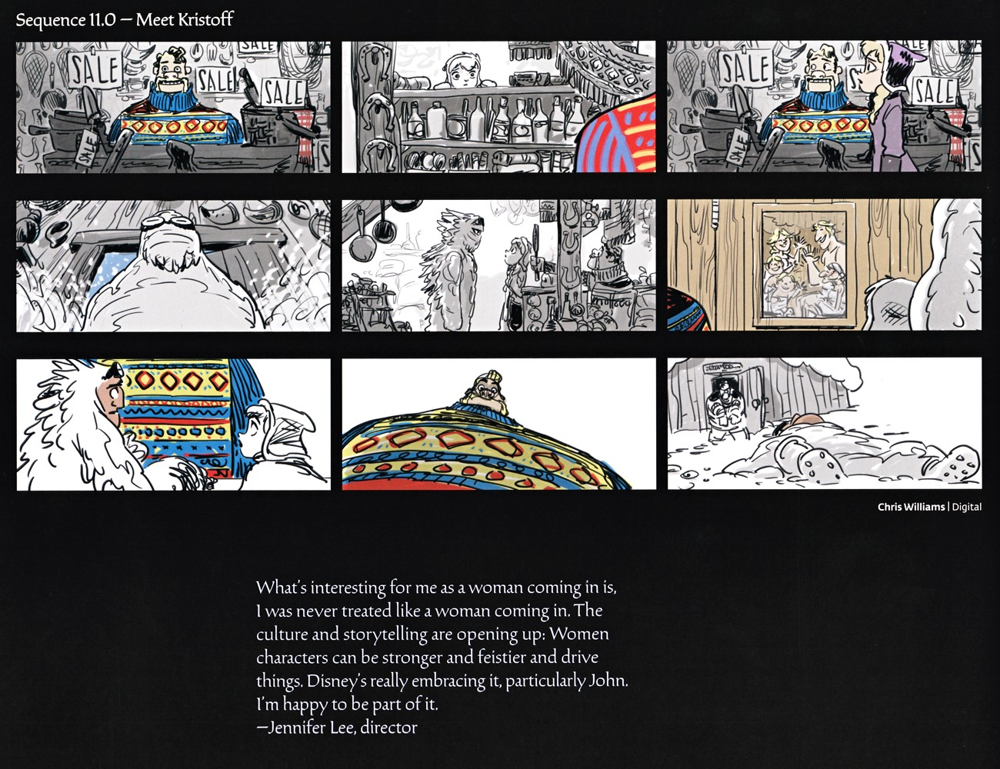

📖 设定集 · F1设定集
F1 图版 · 分镜序列
F1 官方设定集图版 · p013–p026
5
本卷页数
🎨
设定集
中/英
双语
🖼️ F1 官方设定集 · 原书图版
F1 图版 · 分镜序列
《The Art of Frozen》（Charles Solomon, Chronicle Books 2013） p013–p026
2
图版
p013–p026
原书页码
原书
扫描原图
笔记
逐页图注
🎬 故事艺术家笔下的关键序列：这一区间覆盖「I Want」歌曲、初遇汉斯、姐妹决裂、艾莎的歌、雪山跋涉、初遇雪宝、开场采冰与巨魔之歌等分镜页（其中大部分页面已在各卷「设定集精选」中接入，此处收录剩余页）。
🎬 关键序列分镜（p013–p026）

第 11.0 场·初遇 Kristoff
分镜展示 Anna 在 Wandering Oaken 商店遇 Oaken 与 Kristoff，以及 Sven 与彩色毛衣等细节。Jennifer Lee 的引言谈女性在创作文化中被平等对待、女性角色可以更强大并推动剧情。（F1设定集原页）

巨魔造型设计草图
页面是 Nicole Mitchell 的巨魔造型研究——圆滚、覆满青苔与蘑菇的石形身体，以及 Paul Briggs 绘制的 Anna 与巨魔互动。Chris Buck 称这些草图让团队"找到了我们的巨魔"。（F1设定集原页）
💡 图注说明
本页全部图版为《The Art of Frozen》（Charles Solomon, Chronicle Books 2013）原书扫描（原图复制，未压缩），图注（中文标题 + 要点首句）逐页取自官方设定集中文笔记，点击图片可查看原尺寸扫描。
📌 本页要点
你正在阅读《设定集》卷的「F1 图版 · 分镜序列」。本页由电影正典、官方设定集与官方小说综合梳理，可作为该主题的速查入口；右侧目录可快速跳转到本页各小节。